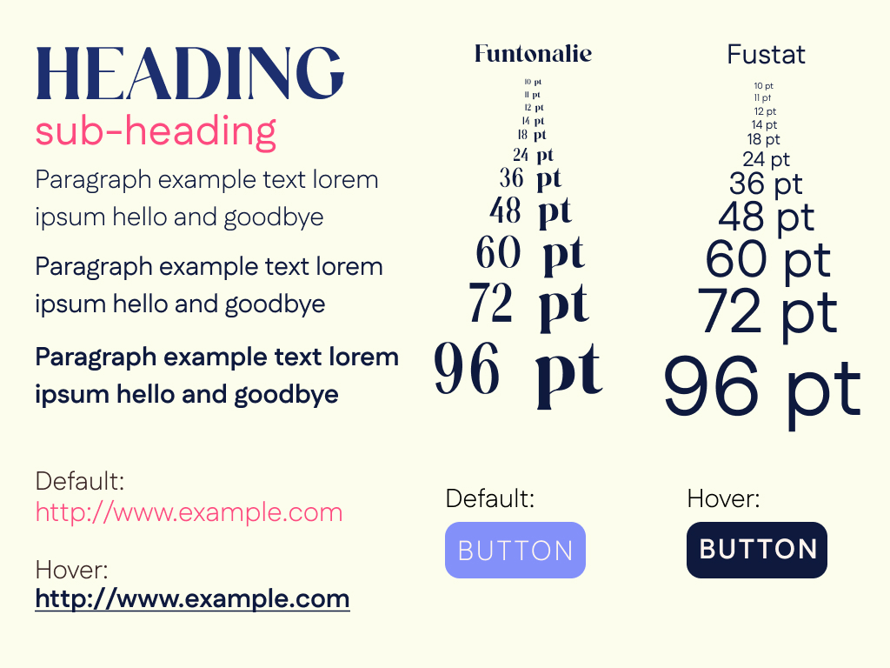

Nibbly by Vy Le
The Overview
Introduction
This case study showcases my final project for IDM232 and highlights the process and development of a dynamic recipe website powered by PHP. I aimed to create a platform that simplifies the cooking experience by offering users an intuitive way to browse, search, and interact with a large collection of recipes. The project challenged me to transition from front-end design techniques to backend programming while maintaining a strong focus on user needs and accessibility.
Throughout the project, I pulled inspiration from existing platforms and applied those insights to design a seamless, user-friendly interface. From building a dynamic search bar and cuisine filters to creating responsive recipe pages that display detailed information, every feature was thoughtfully crafted to enhance usability. This project reflects a careful balance between technical functionality and creativity, resulting in a polished and approachable website for home cooks and food enthusiasts alike.
Context & Challenge
Background
For my final project in IDM232, or Scripting II, I focused on developing a dynamic recipe website that utilized PHP to manage and display data. This assignment challenged me to expand my web development skills by transitioning from front-end design techniques to backend programming. Working with a large dataset of recipes, my goal was to create a site that could handle complex information while providing a clear and organized user experience. The course spanned 10 weeks under the guidance of Professor Philip Sinatra, with each assignment designed to progressively build the necessary skills for the final project. This methodical structure allowed me to approach the project with focus and apply new techniques step by step.
The Problem
The project introduced me to PHP, a server-side scripting language I had never used before, which required a new approach to building websites. Unlike the static methods I was familiar with, PHP allowed for dynamic content generation, but it also posed unique challenges. My main task was to design a system that could efficiently retrieve and display recipe data, such as images, ingredients, and instructions, from a structured database. Balancing the technical demands of learning a new language with creating a user-friendly interface required careful planning and problem-solving throughout the development process.
Goals & Objectives
The key goal for this project was to deliver a functional recipe website that could dynamically display content based on user interactions. I aimed to ensure users could search, filter, and browse recipes with ease, all while maintaining a visually clean and straightforward design. On the technical side, my objective was to write efficient, modular code that utilized PHP’s strengths in database integration to handle large datasets effectively. This project served as an opportunity to deepen my understanding of backend development and apply these skills in a practical and creative way.
Process & Insight
Target Audience
The target audience for this project includes home cooks and food enthusiasts who prioritize simplicity, efficiency, and visual clarity when searching for recipes. These users value platforms that allow them to easily discover, organize, and access cooking inspiration without unnecessary complexity. Whether they are preparing meals for a busy weeknight or exploring new dishes to impress at gatherings, these individuals want a website that works seamlessly as a practical and approachable tool. By understanding their preferences, I focused on designing features such as intuitive navigation, clear recipe categories, and dynamic search functionality that would make the cooking experience more enjoyable.
Research & Planning
To ensure the design met the needs of the audience, I started by studying two popular recipe platforms: Dinnerly and The Kitchn. Dinnerly stood out for its minimalistic design and user-friendly layout, which inspired my approach to creating a clean and simple interface. However, I noticed some areas for improvement, such as limited dynamic functionality and a lack of visually distinct categories. T he Kitchn, on the other hand, offered a more content-rich experience with strong visual hierarchy and effective use of space. It influenced my decision to emphasize clear navigation and visually engaging layouts.
After analyzing these platforms, I identified what worked well and what could be improved, using these insights as the foundation for my design decisions. I created wireframes to map out the structure of the website, ensuring that elements like the search bar, recipe filters, and content organization were positioned intuitively. This stage helped me establish the core layout and functionality before diving into the design and development process.
Design Development
The visual identity of the website was carefully crafted to align with the audience’s preferences for a fresh, inviting, and practical design. I chose a soft cream background (#FBFDEC) to create a clean and welcoming atmosphere, while bold accent colors, like bright pinks and blues, were used strategically to highlight interactive elements such as buttons and links. These colors not only drew attention to key actions but also added a sense of vibrancy to the overall design. For hover effects, I incorporated contrasting colors to provide subtle yet effective feedback during user interactions.


Typography was equally important in defining the website’s character. I paired a bold serif font for headings to give the interface personality and structure, while a clean sans-serif font was selected for body text to ensure readability. The type hierarchy was carefully adjusted to differentiate key elements, such as recipe titles and instructions, ensuring the content remained clear and easy to navigate.
Throughout the design process, I made refinements based on feedback and testing. Early iterations of the color palette included brighter tones, but these were adjusted to more muted shades for better accessibility. Similarly, I revisited my font pairings to maintain consistency and alignment with the website’s theme. These refinements helped create a cohesive, polished design that met the project’s goals.
The Solution
To simplify the cooking experience and address the need for a more dynamic and user-friendly recipe platform, I focused on designing and implementing several core features. These included a functional search bar, a cuisine filter, a central recipe hub, individual recipe pages, and responsive design. Each feature was thoughtfully developed to balance functionality with accessibility, ensuring the platform remained practical while enhancing usability.
Search Functionality
The search bar allows users to quickly find recipes by entering keywords. For example, typing "chicken" dynamically displays all recipes that include chicken as an ingredient. This feature was designed to save time and eliminate frustration by providing users with instant, relevant results. It transforms the search experience into something both simple and intuitive, creating a seamless connection between user input and the content they need.
Cuisine Filter
The cuisine filter organizes recipes into clearly defined categories, such as "Italian," "Mexican," or "Vegetarian." This feature helps users narrow down their choices based on specific preferences, creating a more focused browsing experience. Unlike static filters, this dynamic feature ensures that users can explore recipes by theme with ease, offering a level of personalization that enhances their interaction with the platform.
Central Recipe Hub
The central recipe hub acts as a starting point for users who prefer to browse all available recipes. This page dynamically displays the full collection of recipes in an organized, scrollable format. Each recipe is represented with a thumbnail, title, and brief description, giving users a visual and textual preview before diving deeper. From this hub, users can click on any recipe to access its dedicated page.
Individual Recipe Pages
Each recipe page is dynamically generated to display all the essential details a user needs, including ingredients, cooking steps, preparation times, serving sizes, and accompanying pictures. The layout is structured to prioritize clarity, ensuring users can easily follow instructions while cooking. These pages were designed with simplicity in mind, reducing cognitive load and making the content approachable for cooks of all skill levels.
Responsive Design
The platform was built to adapt seamlessly to various devices, including desktops, tablets, and smartphones. This ensures users can access recipes wherever they are, whether they’re cooking in their kitchen or shopping for ingredients at the store. The responsive design preserves the site's visual hierarchy and functionality across all screen sizes, maintaining accessibility and usability.
Backend Integration
The backend of the website is powered by PHP and an Excel-based database, allowing recipes to be fetched and displayed dynamically. This integration ensures that search and filter features operate efficiently, reducing the need for static content updates. The backend setup also enables scalability, making it easy to add new recipes or categories as the site evolves.
The final solution stays true to the project’s goals by creating a streamlined and intuitive experience for home cooks.
By combining dynamic functionality with thoughtful design, the platform successfully addresses user needs while maintaining an engaging, accessible interface.
Explore the full final website here → Nibbly
The Results
Conclusion
This project provided a valuable opportunity to explore the intersection of backend development and user-centered design. By incorporating features such as a dynamic search bar, cuisine filters, and responsive recipe pages, I was able to deliver a website that simplifies the process of discovering and preparing recipes. The integration of PHP and an Excel-based database allowed the platform to handle complex data efficiently, ensuring a smooth and scalable experience for users.
Through this process, I learned how to adapt my problem-solving skills to address technical challenges while maintaining a strong focus on usability. Each iteration of the design pushed me to refine the interface and improve functionality, helping me grow as both a developer and a designer.
Reflecting on the final product, I’m proud of how the website balances dynamic functionality with a fresh and engaging design. It successfully addresses the needs of its audience while providing an intuitive and visually appealing platform. This project deepened my understanding of backend integration and responsive web design, and I believe the final build is a meaningful tool that makes cooking and recipe discovery more enjoyable.